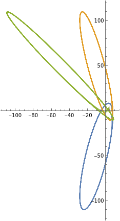
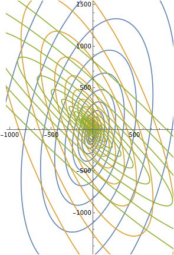

|
Alena Chan I'm a Computer Science student at Columbia University. I previously worked as a SWE intern. Email / LinkedIn / interesting links / click! / Github |
{kind=link}
Projects |

|
Sentence Embeddings
GitHub tldr: study how domain and embedding dimensionality interact in unsupervised sentence encoders. Compare sentence embeddings learned from pop songs and scientific papers data. |
|
TorchInductor Debugger
link, 2025
github A comprehensive debugging toolkit for developing custom accelerators with PyTorch's TorchInductor compiler, supporting both eager graph validation and full AOTAutograd + kernel-level compilation. This project provides tools to simulate hardware constraints, compare outputs across backends, generate detailed reports, and benchmark model performance. |
Fly language
link, 2025
github Built Fly language using OCaml LLVM. Fly is a beginner-friendly safe introduction to OOP and functional programming. |

|
Filter for CubeSat control
arXiv (in progress), 2024
GitHub tldr: Extended Kalman Filter to denoise sensor readings, achieving 58% reduction in orientation estimation error. Built satellite control dynamics simulation (MATLAB) and control logic. |
ResearchI'm interested in mathematical modeling and machine learning. I did some research projects in dynamical system stability, TDA, statistical filtering and optimizers. |
|


|
Stabilizing effect of delay in higher dimensions
Alena Chan arXiv, 2022 arXiv Stabilizing a 3-agent system of linear differential equations by introducing a delayed response. |
|
From Rattle to Roar: Optimizer Showdown for MambaStock on S&P500
arXiv, 2025 github Designed novel Roaree optimizer that addresses oscillatory training losses of Lion optimizer and preserves fast convergence. Roaree outperformed existing optimizers in stock prediction using Mamba model. |
Miscellanea |
Hackathons |
Noteworthy, Treehacks-2025 Memory playground, Treehacks-2024 |
Talks |
...talks description coming... |
Misc |
Other Awesome Stuff |
|
This template was copied from source code. Photos are from Unsplash. Website is under construction. Last updated September 2025. |